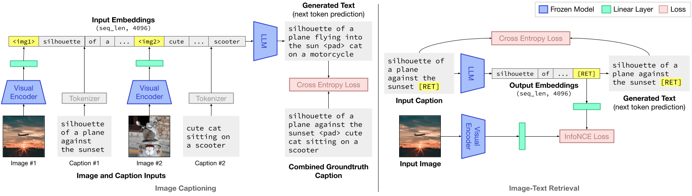
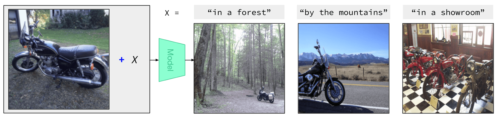
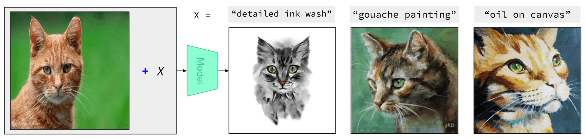
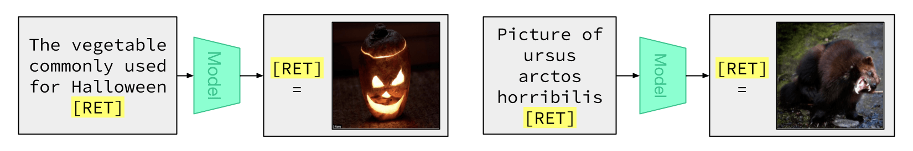
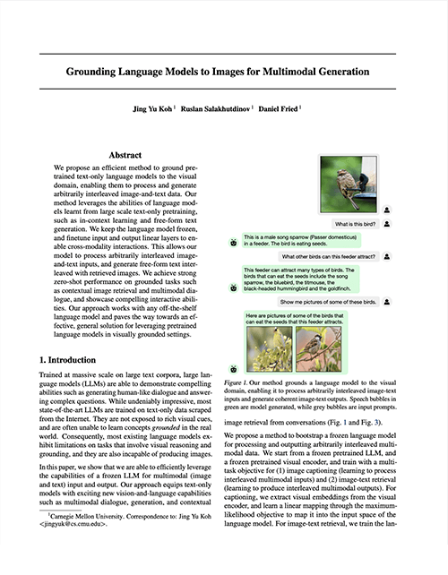

Grounding Language Models to Images for Multimodal Generation
| Jing Yu Koh | Ruslan Salakhutdinov | Daniel Fried |
|---|
| Carnegie Mellon University |
|---|
Abstract
We propose an efficient method to ground pretrained text-only language models to the visual domain, enabling them to process and generate arbitrarily interleaved image-and-text data. Our method leverages the abilities of language models learnt from large scale text-only pretraining, such as in-context learning and free-form text generation. We keep the language model frozen, and finetune input and output linear layers to enable cross-modality interactions. This allows our model to process arbitrarily interleaved image-and-text inputs, and generate free-form text interleaved with retrieved images. We achieve strong zero-shot performance on grounded tasks such as contextual image retrieval and multimodal dialogue, and showcase compelling interactive abilities. Our approach works with any off-the-shelf language model and paves the way towards an effective, general solution for leveraging pretrained language models in visually grounded settings.
Model
FROMAGe (Frozen Retrieval Over Multimodal Data for Autoregressive Generation) is a model trained on image-text pairs on a multi-objective loss of image captioning and image-text retrieval.
It is capable of processing arbitrarily interleaved image and text inputs, and producing interleaved images and text as outputs. FROMAGe is capable of a variety of zero-shot and few-shot image-text tasks.
Capabilities
FROMAGe is capable of producing compelling few-shot results on various image-text tasks. Images shown are retrieved from the Conceptual Captions dataset. More qualitative results are provided in our paper.
Concept Composition
FROMAGe can seamlessly composite image and text data to retrieve images with the desired style or content. Note that the objects ("motorcycle" and "cat") are never explicitly mentioned in text.

Multimodal Dialogue
FROMAGe can generate multimodal dialogue, processing arbitrarily interleaved image-and-text inputs, and producing image-and-text outputs. Green bubbles indicate model generated outputs, grey bubbles indicate user provided prompts.
World Knowledge
Our model is able to draw upon knowledge about the world learnt through large scale text-only pretraining of its frozen large language model.
In-context Learning and More
Our model is able to perform many more interesting and compelling image-text tasks. More qualitative results are provided in our paper and appendix.
Paper
|  |
Grounding Language Models to Images for Multimodal Generation
Jing Yu Koh, Ruslan Salakhutdinov, Daniel Fried. Preprint, 2023. [arXiv] |
Citation
@article{koh2023grounding, title={Grounding Language Models to Images for Multimodal Generation}, author={Koh, Jing Yu and Salakhutdinov, Ruslan and Fried, Daniel}, journal={arXiv preprint arXiv:2301.13823}, year={2023} }
Acknowledgements
We thank Santiago Cortés, Wendy Kua, Paul Liang, Martin Ma, So Yeon Min, Brandon Trabucco, Saujas Vaduguru, and others for feedback on previous versions of this paper. We thank Felix Hill for insightful discussions about Frozen. Icons from FontAwesome and flaticon.com.